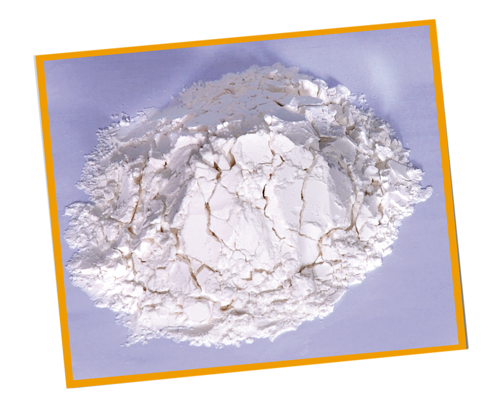

ஆகையால், முத்துப் போன்ற வெள்ளை அரிசி அழகாக இருப்பினும் போஷாக்கு பயனில் தரம் குறைந்தே காணப்படும்.
மேலும், சந்தையில் கிடைக்கும் வெள்ளை கோதுமை மா, வெள்ளைப் பாண் என்பனவும் பல முக்கிய சத்துக்கள் (புரதம், விற்றமின்கள், இரும்பு, கல்சியம், நாகம்) மற்றும் நார்ச்சத்து குறைந்ததாகும். ஏனெனில், மா அரைக்கையில் குறைந்த சார் எடுக்கும் வீதம்(72மூ) கையாளப்படுதல். ஆகையினால் கோதுமை மாவும் அதைச் சார்ந்த பொருட்களையும் விட அரிசி போஷாக்கு மிக்கது. அரிசியை சுத்தம் செய்கையில் அதன் மேலுறை அல்லது தவிடு நீக்கப்படுவதனால் தவிட்டிலுள்ள முக்கிய விற்றமின்கள், தாதுப்பொருட்கள், நார்ச்சத்துக்களை இழக்க நேரிடும்.